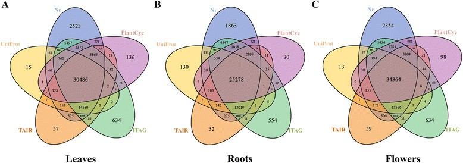

Where Humanity Sits
I believe that humanity sits at the intersection of all systems of thought, all religions and philosophies, even science, atheism, and agnosticism. Humanity refers to the core beliefs and principles that good people intuitively share. The rest is interpretation and symbolism to help us understand. It cannot all be true, but it is true for those who believe. These systems share invaluable generational knowledge from unknown sources, guiding our lives away from the errors of the past, preventing us from destroying our societies, our planet, and our very own souls.
Republished from:
- https://www.linkedin.com/pulse/where-humanity-sits-john-west/
- https://deliverystack.net/2025/05/19/where-humanity-sits/
Think of a Venn diagram...no, let's call it a flower (maybe a lotus of all colors), with more than 30 petals that somehow intersect at its pistil (female/center). The pistil represents our shared humanity. The petals represent the offshoots of our thinking. In fact, there may be more than seven billion petals today.
If you think critically, you may determine that it cannot be any other way. The best thing to do may be to plant seeds and water the sprouts. Let's keep this flower growing forever.
The word corona has some meaning in the context of a flower. Unfortunately, I could not find an appropriate flower diagram for this post. In any case, maybe this terrible thing is here to remind us to come back together somehow.
What are your core beliefs and principles?
Namaste ("the divine in me recognizes the divine in you").
I worship at the feet of one that has greater compassion than I myself have.